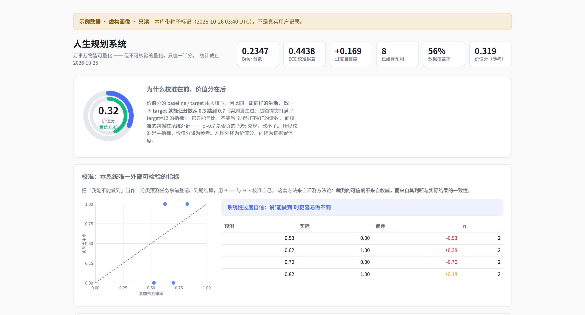

计划会骗你。
结算不会。
示例p = 0.70 → 未兑现 · 偏差 +0.70
lifeplan 把目标变成可核验的指标，把「我能不能做到」变成事前登记、到期结算的预测。它不催你打卡，只在你高估自己的时候，把账算给你看。
本地优先 · 零依赖 · 无账号 · 示例数据为虚构画像
完成，不等于做到。
待办清单记录你做了什么；lifeplan 记录你有多了解自己。两件事都重要，但后者很少有人真的量过。
| 大多数工具 | lifeplan |
|---|---|
| 打勾就算完成 | 完成也要看证据等级：自述、记录、可核验，权重不同 |
| 一个总分决定今天好不好 | 价值分只作参考；校准才是主指标 |
| 目标没达成就悄悄改基线 | 基线冻结，事后追认会被审计检出 |
| 「我今年一定能上岸」 | 写成概率 p，到期结算，用 Brier / ECE 校准 |
每周十分钟，只做三件事。
它不替你决定目标，也不催你执行；它只负责把账算清楚。
-
写下可核验的目标
把「变好」拆成指标、baseline 和 target，并冻结基线。
lifeplan init -
每周记录一次观测
标出证据等级：只有一句话，还是有截图、日志或公开链接。
lifeplan observe --metric 1 --value 9 --evidence https://… -
到期结算预测
写下 p，到期填 1 或 0。看板会告诉你，你系统性高估还是低估。
lifeplan resolve 4 --hit 0
命令行是目前的录入方式；看板在手机和桌面上都能读。图形化录入还没做，页面不假装它存在。
看板不是仪表盘，是一张账单。
看板先给你校准，再给你自我评分。前者由到期结算决定，改不了；后者由 baseline / target 决定，可以改。

- 校准在前
- Brier、ECE、过度自信度是主指标；它们由到期结算决定，不由你今天的心情决定。
- 价值分只作参考
- baseline 和 target 由人填写，改一下 target 就能改分数，所以它只可纵向自比。
- 证据置信度单独列出
- 「我做了」和「我做了且有可核验记录」拿到的权重不同。
从空库到第一张结算单。
Python 3.11+，零第三方依赖（3.10 需 tomli）；数据写在 LIFEPLAN_HOME 指定的目录。演示约 3 秒。
$ git clone https://github.com/aidless/lifeplanner.git
$ cd lifeplanner
$ make demo
→ /tmp/lifeplan-demo/dashboard.html不想装 Python？先打开上面的示例看板；它就是 make demo 生成的虚构画像。
你的记录，不需要经过任何服务器。
没有账号系统，没有云端同步，也没有「为了改进产品」的默认上传。
| 默认存放 | 本机 SQLite 单文件 |
|---|---|
| 是否上传 | 不上传；没有账号体系 |
| 看板 | 单文件 HTML，离线双击可开 |
| 删除 | 删除数据库文件即可；lifeplan backup 可先备份 |
边界：它不是心理治疗、医疗或财务建议。价值分只可纵向自比，不能当作「过得好不好」的结论。
常见问题
需要 AI 或 API Key 吗？
不需要。核心功能是纯 Python 标准库；没有模型也能初始化、记录、结算和生成看板。
手机上能录入吗？
目前录入是命令行；看板在手机浏览器里可读。图形化录入还没做，不假装有。
数据会丢吗？
数据只在本机文件里。换机器或重装前用 lifeplan backup 备份；没有云端副本。
可以商用或二次开发吗？
MIT 许可，可以。具体约束见仓库里的 LICENSE。
先看一张结算单，再决定要不要开始。
不注册、不填数据；示例看板是 make demo 生成的虚构画像。